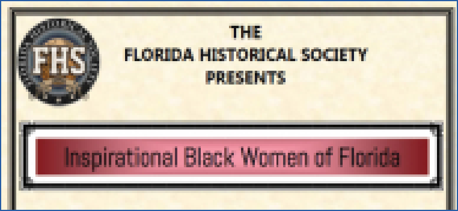

Inspirational Black Women in Florida
“Chicago Cubs Central Florida Connection”

A History of Spring Break in Florida

La Paz December 6, 1976
The Monday, December 8, 1941, Orlando Morning Sentinel "Extra" edition
had one word headline in
bright red block letters nearly four inches tall: WAR.
Front page articles detailed the attack on Pearl Harbor, described the
imminent declaration of war
on Japan, and outlined what retaliation for the attack might look like.
The paper's front page editorial stated, "This may be a long war. It may
last for years. It may,
probably will, involve us in actual fighting with Germany and Italy."
The editorial went on to say, "That means sacrifice. That means that
every soldier, every seaman
must do his duty and be ready to answer any call. That means the citizen
must give up his ideas of
profit and easy living. That means the man... in every walk of life must
surrender his own plans and
purposed in answer to the great call of country and of freedom."
Young men in Brevard County were ready to answer the call.